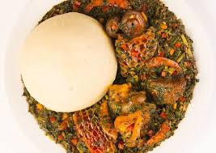

Efo Riro

Efo Riro, This is a classic Yoruba vegetable soup
prepared with fresh pepper, vegetable, dry fish and meat
and enjoyed with any desired Swallow.
How to make native Efo Riro
Get the underlisted items :
- Leafy Vegetable (Preferably Ugwu Leaves)
- Fresh Peppers (Rodo, Sombo and Tatashe)
- Onions, Garlic and Ginger
- Palm Oil
- Locust beans (Iru)
- Fresh Beef and assorted meat (Cut to desired sizes)
- Dry Fish (Stock fish, Panla, Apo..etc)
- Red Crayfish
- Cowhide (Ponmo)
- Salt (to taste)
- Seasoning
Follow these steps carefully to achieve the desired results
- Wash your vegetable and put in a sieve to drain
- Blend your Fresh Peppers and onions
- In a medium sized pan, add your Palm Oil and add freshly diced onions
garlic and ginger
- Add your blended pepper and keep stirring till no moisture.
In the meantime, add salt, seasoning, onions to your meat and
stockfish and boil with very little water until very soft.
Also boil the cowhide with salt and turn away the water,
rinse your crayfish and drain
- Add seasoning, locust beans and salt to you stew and keep stirring.
- Then add your meat, stockfish, ponmo, dryfish, red crayfish
- Keep stirring till no moisture from your fish or meat remains
- Lastly add your drained vegetables, stir until fully submerged
in the stew, then reduce the heat.
- Do not cover your pan to prevent your vegetable from
changing colour
- Allow to simmer for few minutes then turn off the heat
- Serve and enjoy with your favourite Swallow
: Eba, Poundo or Cemo
Back to the top
Back to Homepage